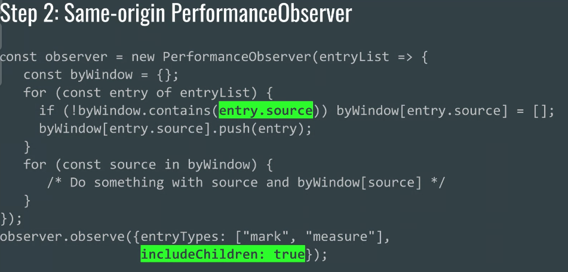
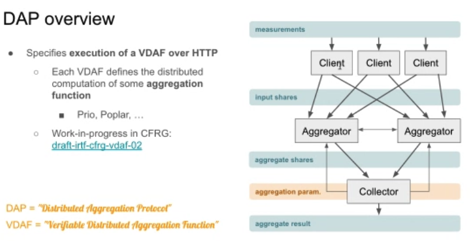

Participants
Sia Karamalegos, Michal Mocny, Nic Jansma, Dan Shappir, Rafael Lebre, Jeremy Roman, William Liu, Mike Henniger, Yoav Weiss, Abin Paul, Sean Feng, Giacomo Zecchini, Jaspreet Sandhu, Benjamin De Kosnik, Patricija Cerkaite, Carine Bournez, Jeremy Spurlin, Michelle Vu, Alex N Jose, Patrick Meenan, Andrew Galloni, Alon Kochba,
Admin
- Skipping the next call which falls on US Thanksgiving. Next call would be December 8th
- AI (yoav) to cancel the call
- Yoav: Has been resolved since
- … Integrate current processing model into HTML and Fetch directly instead of a separate spec
- … No notion of making that specification a deliverable of this
- ... I think it would be good to keep around the explainer
- … But not a WG deliverable
- Pat: Existing Fetch and HTML issues with PRs in flight
Cross-frame performance timeline
recording
- Ian: Every frame is an island - need to explicitly coordinate to share metrics between them
- Want to allow embedded content to opt-in to share perf timeline data
- Jaspreet been working on an implementation, initially just for same-origin frames getEntries, then perfObserver, then cross-origin frames
- Should be behind a flag in Chrome M110
- Opt-in shape <insert image>
- Perfobserver
-  height: 298.67px; margin-left: 0.00px; margin-top: 0.00px; transform: rotate(0.00rad) translateZ(0px); -webkit-transform: rotate(0.00rad) translateZ(0px);" title="">
- Cross-origin would include a document policy in the embedded content. Default is no sharing
- Questions:
- Are there checkpoints useful on their own? Will they enable feedback?
- Would a polyfill be useful?
- Philip: How would this work with anonymous iframes? ie, frames with an src of something like "javascript:..." or "about:blank"
- … When you have a frame with such a source, it’s created by the page, and inherits document.domain from that page. For some purposes it’s considered the same domain.
- … Is there any guidance around that?
- Ian: If they are considered same origin they might be exposed
- Yoav: I don’t believe they are same origin
- Nic: If you create an anonymous iframe in the page, it’s crawlable by the top-level origin
- Yoav: If it’s crawlable today, it makes sense to make it still accessible
- Nic: with my mpulse hat on, boomerang will use this, so this is great. One question: today we gather all the resource timing data on the page, including crawlable iframes. I like the steps, as they can reduce code on our side.
- … Would includeFrames be feature detectible?
- Ian: It’s defined in the IDL for the perf observer
- Yoav: that’s hard to feature detect, and only be available in stage 2
- Nic: Would be critical for us to be able to do that in order to use this API, and fallback to what we do now in its absence.
- … The API had “includeFrames” and “includeChildren”. Semantic difference?
- Ian: No, need to change examples
- Sia: What do you think are some of the practical applications of it? What are the business reasons for it?
- Ian: provide visibility into 3P iframes, with their consent, and figure out slow downs
- Nic: Our example is trying to gather the waterfall for later debugging, but we don’t know what we don’t know. Cross origin visibility can help us know full page weight, the timeline, etc
- Philip: another thing to consider is what happens with frames that contain non-html, for example a frame that loads a PDF (again this is an issue we ran into with boomerang trying to crawl child frames)
- Ian: Currently there’s no performance timeline in non-HTML documents
- Philip: window object exists, but no performance object
- Ian: Those frames won’t contribute to the crawl, but won’t crash
- Jeremy: My point can probably be summarized in text -- new parameters can be detected with function.length, but are more naturally added with dictionary parameters (which also makes the call site a little clearer). Dictionary parameters can be feature detected by checking whether the UA read the newly added property
- Philip: For third party iframes, can a resource within the page restrict measurements? ie, the HTML in the iframe allows crawling, but the Resource has a restrictive Timing-Allow-Origin? And what if the resource is same-domain with no timing-allow-origin?
- Ian: If the resource is exposing its information to the frame and the frame exposes the information, the information would be exposed. We’re assuming the frame is cooperating with the embedder.
- Nic: If you opt-in you can do the frame-tree walk which would find those frames. Is that available to scripts?
- Ian: No, that’s the browser walking the tree frame
- Jeremy: does the frame tree walk find ones where an intermediate frame doesn't grant access? i.e., A embeds B embeds A
- Ian: It does. It’s based on Document-Policy’s model
- Nic: Any specific feedback you need from the WG?
- Ian: Appreciate the feedback on usage and on perf timeline.
PPM WG
- Chris: Trying to solve problems where there’s a statistical analysis you want to do, without observing any particular user.
- … Going to assume that the data collection is distributed over multiple servers and these server don’t collude
- … One protocol standard called the distributed aggregation protocol (DAP)
- … The WG is only going to spell out that. Open to different solutions
- … Want to enable techniques that enable us to compute the aggregate that we need and nothing else
- … One early draft of a concrete protocol DAP, based on verifiable distributed aggregation function (VDAF)
- … Defines how each client take its measurement, sends one share to each of the aggregators, which communicate with one another to verify that their shares are a valid input.
- … Once validated, the input can be sent to the collector
-  height: 317.33px; margin-left: 0.00px; margin-top: 0.00px; transform: rotate(0.00rad) translateZ(0px); -webkit-transform: rotate(0.00rad) translateZ(0px);" title="">
- … can do histograms to get the distributions, machine learning, etc
- … WebPerfWG may have use cases this can solve
- Nic: A lot of things we discussed in the past. Presentation that Yoav gave at TPAC around aggregated reporting
- Yoav: There are a lot of things that we could report, but shouldn’t
- … One example is DNS timestamps which are useful in the aggregate but not for an individual user, and aren’t up to the servers to opt-in to
- … Not the servers’ to give
- … And we give that information to JavaScript anyway, would be good to stop and only give aggregate
- … Cross-origin resources, we require an opt-in, but maybe some of that information could be given in aggregate without opt-in
- … Risk is security about exposing information about a specific user, per K-anonymity and other boundaries
- … Provide things like Nic talked about like how much are third-parties causing pain on the page
- … My proposal at TPAC was related to private aggregated reporting from folks doing ad aggregation, maybe we could use a similar infrastructure for the reporting we care about
- … How does this fit in with your vision?
- … Is the protocol agnostic to the types of information being reported?
- … You’d define the protocol, and the API would be defined by Aggregated Reporting API and we’d build on top of that?
- Chris: Protocol is agnostic to the type of aggregates you’re computing, so long as it can be computed in this architecture
- ... Certain things are out of scope for DAP
- … But there’s a lot of flexibility in sort of aggregation functions you can express
- … Prio: Clients need to arranged to aggregate and compute the statistic you want
- … Intentionally narrows how clients configure their data
- Yoav: One example is the transferSize of cross-origin resources, bytes from them. Information we don’t expose, because it can indicate things about user’s login state in those origins. We do expose with an opt-in, but a lot of them don’t opt-in.
- … Would be interesting to say X page on the aggregate consumes this many cross-origin bytes
- Chris: What is cross-origin bytes?
- Yoav: example.com loads resources from kittens.com, those are cross-origin
- Chris: You want to know how many bytes are from other origins when loading a page?
- Yoav: Yes
- Chris: That would be in scope for DAP
- … Are you familiar with IPA? PatCG is working on?
- … Sounds like something that’s in scope for the protocol we’re working on
- … One thing you could do is ask on the list, here’s a list of use-cases our WG has, do you all have a solution for these?
- Yoav: Would be interesting to start that conversation
- … Aggregated reporting folks were thinking about a single aggregation server that doesn’t have the key
- … Seems like a slightly different architecture from what you have in mind
- Chris: Last time it was being worked on by Charlie Harrison
- … Protocol for this project is what we’re working on a spec for
- … So in scope
- Nic: useful for us as a WG to think through the previous examples and see if they line up with scenarios this can help us solve, and send it to the PPM mailing list? ppm@ietf.org
- Michal: Wonderful when this is easy, but what happens to things like LCP where certain elements cannot expose precise render times? What does it mean for detailed RUM collection?
- Yoav: From my perspective there’s a difference. How I imagined it, presented to developers as a separate thing from detailed RUM collection. RUM collection gives the details it can. On top of that e.g. aggregated difference between render time and LCP was X.
- … This would be used to augment what we expose in detailed RUM rather than replace it
- Michal: Makes sense, but it might be difficult to directly augment. Sessions measured in LCP reports, then you’ll have aggregate data. In some cases you’ll only get the aggregate LCP value.
- Yoav: We’ll need to provide a single number that will already include a lot of the processing. Won’t be able to do a lot of after-the-fact processing. You’ll need to aggregate a single number, and know on the client what that single number is.
- … In the case of LCP you can see if there’s a difference between actual LCP and what you see in RUM. So for this page, the LCP numbers you’re seeing are far from reality and you should work on your opt-in for that, for example.
- … Still a very early exploration
- Chris: Before measuring you have to know what you intend to compute, but want to design the system with a feedback loop between measurement and aggregation
- … You can use the information to re-measure with parameters and dive down into the data
- Ian: Trying to figure out how this works. Assuming the clients aren’t colluding and the aggregators arent’ colluding. Do all clients need to use the same set of aggregators?
- Chris: Don’t intend to solve the deployment model in the protocol spec. Need at least 2 non-colluding aggregators. Possible to have more. At least for prio, the client would have to trust at least one aggregator
- … Initial deployment would be <misscribed :/ > - that’s one initial experimental deployment
- … Depending on use-cases may require more flexibility
- Ian: Can’t allow websites to specify aggregators, right?
- Chris: Don’t know. If you were providing a RUM service, you could operate one server, and have a customer trusted party to operate the other.
- Yoav: Take an AI to read up more, and see how this fits together vs. my previous proposal
Prefetch and negative timestamps
William: Prefetch fetches the resource ahead of a navigation. Because the request happens before the navigation, the timestamps would be negative, which is not specified
Jeremy: two different ways to treat this - either like a request which started before T=0 but which stalled until the navigation actually initiated, or like a request which started at T=0 and completed quickly due to the prefetch cache
Yoav: Can open an issue to get feedback.
Nic: Thanks all! See you in 4 weeks.
Chat Log
You11:08 AM
https://github.com/web-platform-tests/interop/issues/223
Philip Tellis11:15 AM
How would this work with anonymous iframes? ie, frames with an src of something like "javascript:..." or "about:blank"
Sia Karamalegos11:20 AM
What do you think are some of the practical applications of it? Just so I better understand
Philip Tellis11:22 AM
another thing to consider is what happens with frames that contain non-html, for example a frame that loads a PDF (again this is an issue we ran into with boomerang trying to crawl child frames)
Jeremy Roman11:24 AM
My point can probably be summarized in text -- new parameters can be detected with function.length, but are more naturally added with dictionary parameters (which also makes the call site a little clearer). Dictionary parameters can be feature detected by checking whether the UA read the newly added property.
Philip Tellis11:27 AM
For third party iframes, can a resource within the page restrict measurements? ie, the HTML in the iframe allows crawling, but the Resource has a restrictive Timing-Allow-Origin? And what if the resource is same-domain with no timing-allow-origin?
Jeremy Roman11:30 AM
Possibly dumb question: does the frame tree walk find ones where an intermediate frame doesn't grant access? i.e., A embeds B embeds A
Yoav Weiss11:46 AM
https://github.com/WICG/attribution-reporting-api/blob/main/AGGREGATE.md
Christopher Patton11:48 AM
ppm@ietf.org
Sia Karamalegos11:53 AM
If I were to summarize this, DAP is a proposed protocol for how we might keep data that should be private private and this applies in our case to data collected like in RUM?
Philip Tellis12:00 PM
As a RUM provider, I think having negative values is useful
Christopher Patton12:00 PM
thanks for having me, everyone!
Patricija Cerkaite12:01 PM
Thank you!